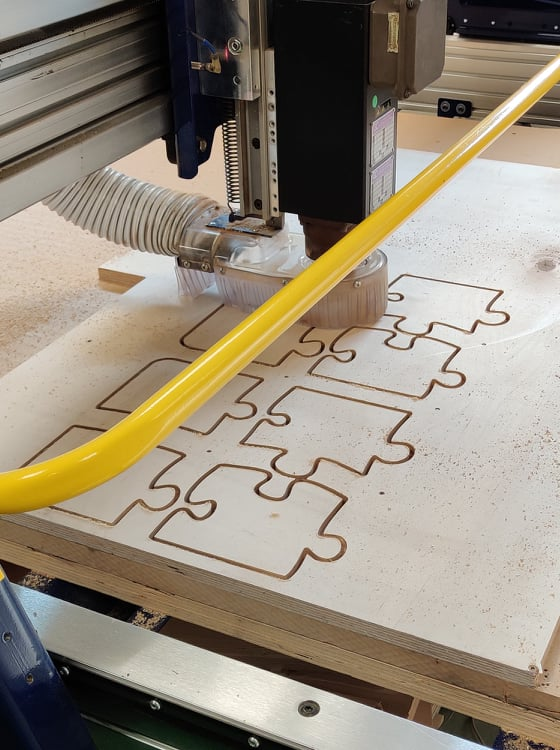

Verkefni 4 snerist um að hanna og fræsa eitthvað stórt. Verkefnið var unnið í hóp, sem samanstóð af Birtu, Davíð og mér. Birta sá um að teikna hlutinn okkar, Davíð sá um að undirbúa hann fyrir framleiðslu í Vcarve og ég hafði yfirumsjón með framleiðslunni. Hér verður farið ítarlega yfir þann hluta sem sneri að framleiðslunni á hlutnum, sem allir hópmeðlimir tóku þátt í.
Þegar verið er að fara að fræsa eru ýmis atriði sem hafa þarf í huga. Alli hópmeðlimir þurftu að horfa á öryggismyndbönd áður en þeir mættu til að fræsa, þar sem fram komu helstu atriði sem þyrfti að varast. Þar má til dæmis nefna að enginn má vera í lausri flík sem getur flækst í einhverju, allir þurfa að vera með öryggisgleraugu og vera í lokuðum skóm og manneskjur með sítt hár þurfa að hafa það bundið í snúð. Heyrnarhlífar eru valkvæðar. Einnig var mikilvægt að allir vissu um staðsetningu og virkni neyðarstoppa og hvernig stöðva ætti fræsinn án þess að neyðarstoppa.
Byrjað var á að velja efni til að fræsa úr. Valin var 18mm þykk krossviðarplata sem var nógu stór til að passa fyrir tvö eintök af hlutnum okkar, en þar sem hluturinn sem við framleiddum var tiltölulega lítill ákváðum við að framleiða tvo, svo bæði heimili hópsins fengju sitt eintak.
Því næst þurfti að stilla fræsinn. Skipta þurfti um bita í honum og nota 6mm bita með sléttum haus. Að minnsta kosti 1/3 hluti bitans þurfti að fara inn í kollettuna sem hélt honum, og miðuðum við við það þegar bitinn var festur í. Hert var með tveimur lyklum, ekki of fast. Eftir það var stærri lyklinum komið fyrir bakvið fræsinn, þar sem lykill sem var tengdur við hann var settur í fræsinn og þannig kveikt á honum, þannig að hægt sé að ræsa hann úr tölvu. Myndin hér að neðan var tekin þegar verið var að skipta um bitann. Þar má til dæmis sjá lyklana tvo sem notaðir voru til að herða.
Nú var komið að því að koma plötunni okkar fyrir í fræsinum. Byrjað var á að færa brúkranann með fræsinum frá, þannig að auðveldara væri að koma plötunni fyrir. Passa þurfti að platan væri alveg upp við kantana næst tölvunni og hægri hliðinni, og síðan var hún skrúfuð niður á fjórum stöðum, í hornunum, með skrúfvél. Passað var að skrúfurnar væru örugglega ekki á stöðum þar sem fræsirinn myndi síðar skera. Ef hann færi í skrúfurnar gæti hann orðið fyrir skemmdum. Eins og Davíð fjallaði um í sínum hluta þarf yfirleitt að gera ráð fyrir skrúfgötum þegar toolpaths eru gerð í VCarve. Þess þurfti þó ekki í okkar tilfelli þar sem hluturinn okkar var ekki það stór. Skrúfurnar voru því einungis fjórar.
Nú var komið að því að fara í tölvuna sem stjórnaði fræsinum og núllstilla x,y og z ás. Á myndinni hér að neðan má sjá viðmótið í tölvunni. Hægra megin er gluggi sem sýnir staðsetningu fræsisins í hnitum.
Til að núllstilla z ásinn var valið "zero z plane" í tölvunni. Síðan var tekin plata sem geymd er á fræsinum og sett undir bita hans. Eftir það sigaði maður fræsinum niður með lyklaborðinu þar til hann snerti plötuna. Þá samþykkti maður hæðina og vélin stillti sig og var þá búin að núllstilla z ásinn. Passa þurfti að setja plötuna aftur á sinn stað eftir að z-ásinn var núllstilltur, því þar var skynjari sem hindraði að vélin færi af stað ef platan væri ekki í. x-ás og y-ás voru núllstilltir með því að keyra brúkranann alveg út í kant plötunnar í horninu næst tölvunni og velja þar núllstillingu.
Þarna var fræsirinn að verða tilbúinn til að framleiða skurðarbrettin okkar. Það eina sem var eftir var að keyra spindilinn upp í snúningum til að hita bitann. Þetta gerði fræsirinn sjálfur eftir að viðeigandi prógram var valið í tölvunni. Beðið var í um 10 mínútur á meðan spindillinn hitnaði.
Þegar fræsirinn hafði hitað sig var hægt að hefja skurðinn. Muna þurfti að kveikja á frásogi, svo sagið myndi ekki safnast upp. Einnig þurfti alltaf að vera viðbúinn að stöðva tækið með því að smella á space takkann á lyklaborðinu tengdu tölvunni eða, í neyðartilfellum, með neyðarstopp tökkunum. Á myndinni hér að neðan má sjá framleiðsluna í gangi:
Þegar fræsirinn var búinn að skera út brettin þurfti að færa brúkranann frá til að fá betra vinnupláss. Ryksuga þurfti vel upp úr öllum raufum eins og sjá má á næstu mynd:
Síðan þurftum við að sækja okkur hamar og sporjárn til að ná kubbunum úr plötunni. Eins og útskýrt var á vefsíðunni hans Davíðs þurfti að setja svokallaða "tabs" sem festu stykkin í plötunni svo þau færu ekki að renna til á meðan enn var verið að fræsa. Brjóta þurfti þessa tabs til að losa kubbana úr. Verkið í framkvæmd sést á næstu mynd:
Eftir að búið var að losa alla kubbana úr þurfti að losa skrúfurnar sem festu plötuna niður og ganga frá plötunni á sinn stað. Einnig þurfti að ryksuga borðið svo það væri tilbúið fyrir næsta hóp.
Eftir að komið var með kubbana heim þurfti aðeins að pússa þá til með sandpappír til að fá þá til að passa vel saman. Síðan voru þeir lakkaðir með viðarolíu. Lokaútkoman var þá svona:

Í töflunni hér að neðan má sjá þann tíma sem fór í verkefni 4, eftir verkþáttum:
| Verkþáttur | Tími |
|---|---|
| Hugmyndavinna og verkefnaskipting | 1,5 klst |
| Undirbúningur og skipulag fyrir framleiðslu | 4 klst |
| Framleiðsla og tiltekt | 3,5 klst |
| Fullklárun vöru | 2 klst |
| Skrásetning á sameiginlega vefsíðu | 1 klst |
| Skrásetning á eigin vefsíðu | 3 klst |
| Samtals | 15 klst |